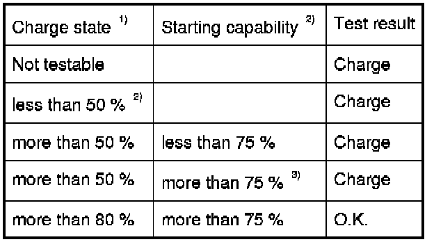
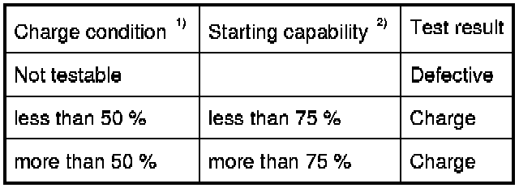

Threshold Values for Inspection of All Batteries (Except for the Telephone Battery)
61 20 . . . - Threshold values for inspection of all batteries (except for the telephone battery)
Safety instructions for handling vehicle battery. Service Precautions
Test step 1 - before charging the battery

Test step 2 - after charging the battery

1) - Charge condition and starting power must always be evaluated together
2) - When test charging for more than 5 hours, use charger Gossen CG 32 or Siemens / Gossen VB 801
3) - Fully charge until charge state is more than 80%.
Note:
If battery was checked on the positive terminal in the engine compartment, repeat check directly on battery for sake of safety.